1、基本介绍
火山软件开发平台是完全拥有自主知识产权、一种目的硬件设备无关、目的软件环境无关、易学易用实用、完全本地化的中文软件快速开发平台。
火山平台采用独创的“语言之上的语言”（LOL）技术，成功屏蔽了火山程序对特定目标环境的依赖。用户只需要学习掌握火山程序语言，就可以针对各种目的环境进行软件开发。同时由于火山程序编译器所编译出来的是目标语言的源代码，因此能够最大限度地提升火山程序员与第三方的合作和资源共享效率， 以及所开发火山程序被社会的认可程度。
以下为火山软件开发平台的架构图：
火山平台用户源程序 支持对应目标环境的火山类库 支持对应目标环境的火山编译器 Assembly / C / C++ / C# ...... Java Objective C / Swift HTML5 + JavaScript + CSS PHP 其它 ..... 本地语言编译器 本地语言编译器 本地语言编译器 本地语言解释器 本地语言解释器 Windows桌面、Linux/Unix服务器端、嵌入式设备、单片机 ...... 安卓移动端、安卓嵌入式设备、服务器 ...... ios应用 网站前端展示、HTML5跨平台应用。 WEB服务器端
而易语言相对火山就比较单薄，虽然易语言支持跨平台，但其程序对linux和unix的支持相对较弱，大部分库也不支持在linux和unix运行。
2、全面支持Unicode(统一码）字符集：
利用Unicode字符集可以非常方便的开发多国语言程序，可以使用Unicode字符串或者直接输入目标语言文本就可以显示出来，这是易语言所不能办到的。
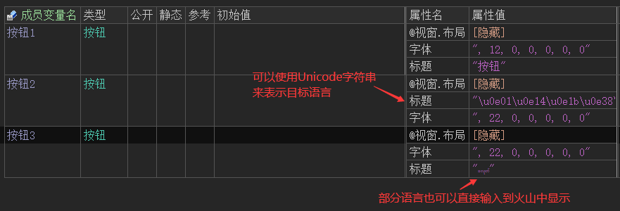
运行效果如下图：
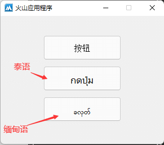
易语言不支持Unicode字符串显示目标语言，也不支持直接输入目标语言，其运行效果如下：
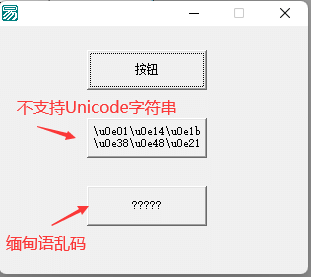
3、支持32/64位程序开发：
易语言因为历史遗留问题导致无法支持64位程序设计，不支持64位也就意味着无法申请更大的内存空间，无法开发一些对于内存要求非常高的大型软件。
而这一问题在火山视窗上不复存在，火山视窗支持编译32/64位程序，可以根据需求选择。
右键项目找到“属性”菜单。
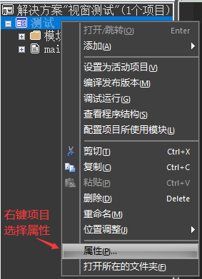
找到“目标平台”，就可以根据需求选择程序位数（默认为64位）。
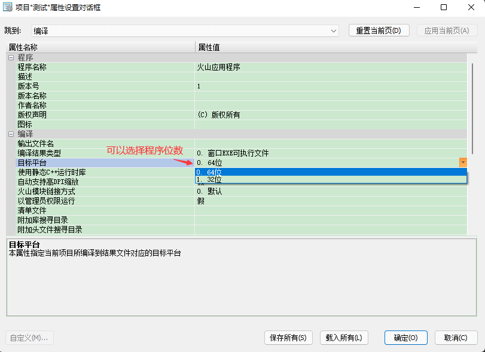
4、系统核心库全部开源：
系统核心类库全部开源可自行随意更改。
因为火山视窗是源码级编译，所以不会存在像易语言一样大规模的误报问题，即便是发生了误报也可以通过修改源码或者更换编译器解决误报问题。
展开“模块”可以查看核心库源码。
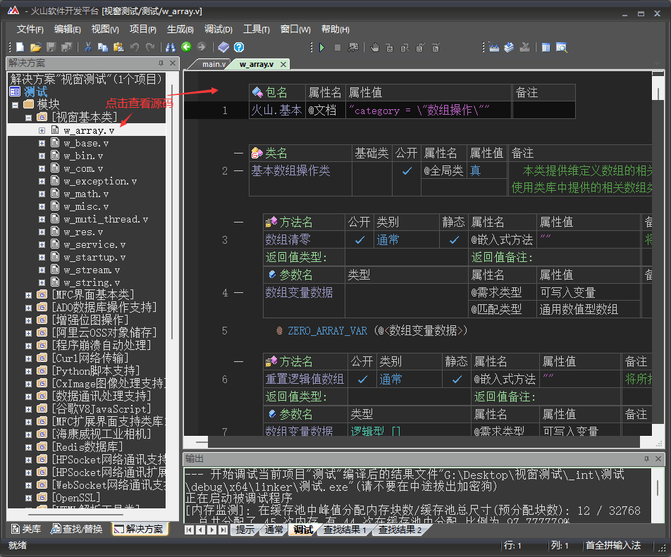
在易语言中不支持查看源码，只能通过类库查看帮助信息。
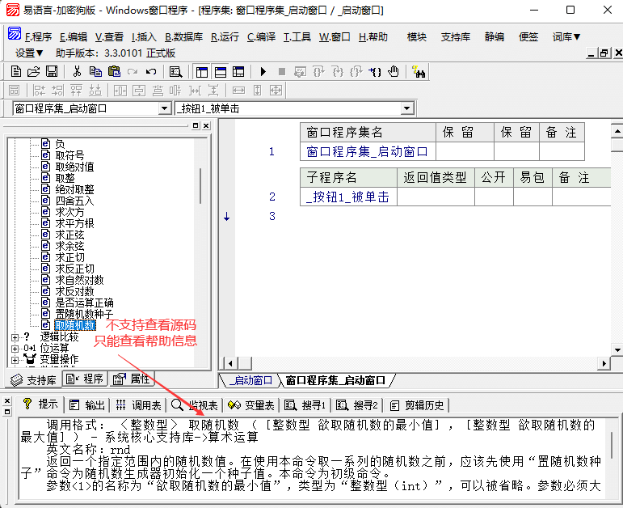
5、支持使用一系列不同的本地编译器：
在火山中，点击“工具->选项”菜单可以打开系统设置。
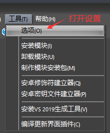
点击左侧“视窗项目管理器”，右侧“本地编译器”就可以修改编译器（需要自行下载对应编译器），此处可以下拉选择也可以直接设置编译器安装路径。
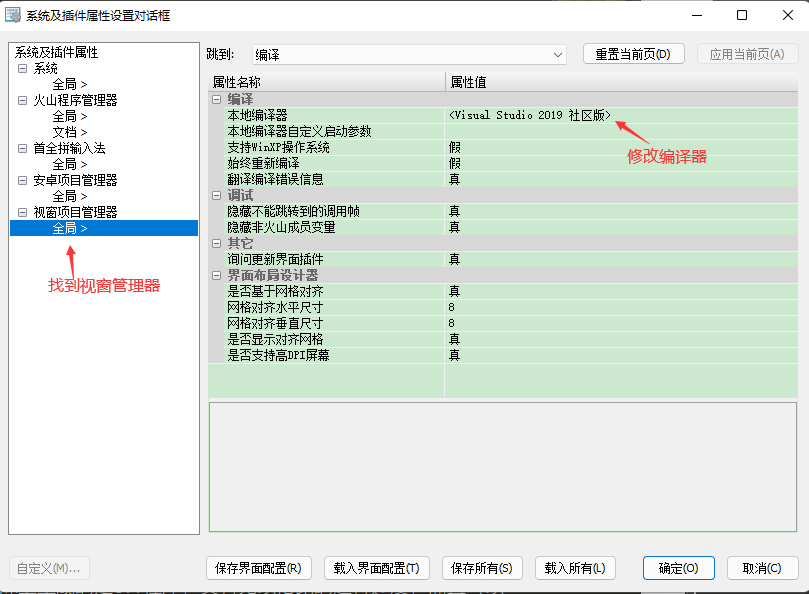
在易语言中虽然普通编译不需要设置编译器，但如果想要静态编译只能手动修改“tools\link.ini”文件中的相关配置项，非常不友好。
在link.ini文件中找到“linker”配置项，然后设置链接器路径。

6、程序代码支持嵌入C，C++：
易语言代码中只能使用易语言支持库或模块来编写程序，如果缺少一些小功能还需要额外封装支持库或模块，使用起来极其不便。
在火上视窗中可以通过阅读封装手册，直接在火山源码中嵌入c、c++代码实现功能，无需额外封装类库。
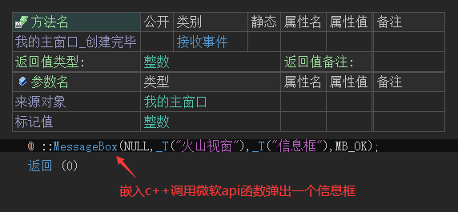
7、C++源码编译：
用火山视窗写程序，虽然表面上是中文的，但是实际上生成的是C++程序，具有和C++一样的运行速度，而且可以与其它C++程序员协同开发。
在程序编译或调试后会在解决方案所处目录生成一个“_int”文件夹，在此文件夹中就可以找到输出的C++源码。
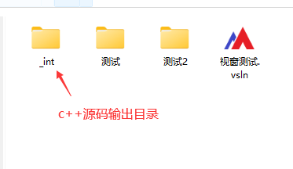
c++源码详细输出位置如下：
调试版程序默认输出在：“_int\项目文件名\debug\x64(或win32)\project”目录中。
发布版程序默认输出在：“_int\项目文件名\release\x64(或win32)\project”目录中。
注：x64指64位程序，win32指32位程序。
8、程序代码即类库：
火山平台支持用火山代码直接封装火山类库，这是易语言所不具备的功能。
关于火山类库封装可以看：部件DLL一文中的介绍。
9、跨平台实现语法统一：
由下图可知，即使是开发平台不同，但程序语法几乎是一致的。
最终可以达到，学会火山视窗平台后也能轻松掌握安卓程序开发，实现软件开发一通百通。
火山视窗部分演示代码：
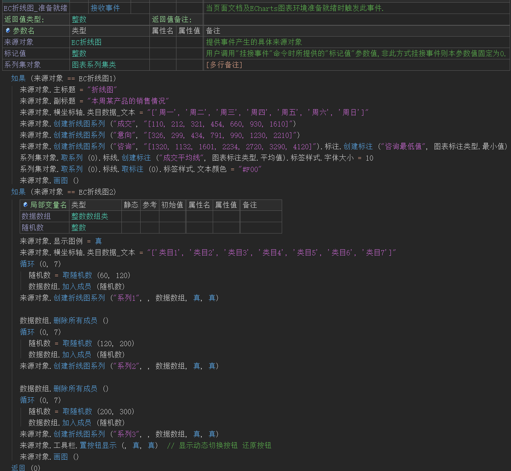
火山安卓部分演示代码：
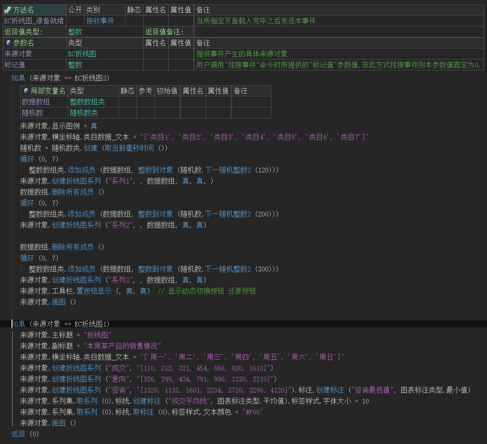
[下一章]